Antes de 1914, houve uma fase de pré-seleção de jogadores brasileiros. Nessa época, eram normal que seleções formadas por jogadores escolhidos de clubes enfrentassem times de países vizinhos. No Brasil, essa fase teve início em 1906 e chegou ao fim com a criação oficial da Seleção.
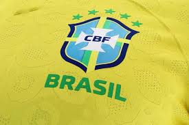Em 21 de julho de 1914, então, a Seleção Brasileira fez seu primeiro jogo oficial, contra o Exeter City, da Inglaterra. A partida aconteceu no estádio do Fluminense e terminou com a vitória brasileira por 2 a 0. Apesar disso, alguns jornais ingleses anunciaram o jogo como empate.
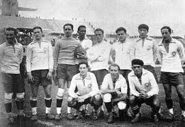Já o primeiro título veio a acontecer dois meses depois, na disputa da Copa Rocca contra a Argentina. Mas só cinco anos mais tarde, o primeiro título de maior relevância, no Campeonato Sul-Americano. Na ocasião, o Brasil bateu o Uruguai e se sagrou campeão.
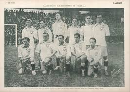A princípio, a Seleção Brasileira jogada com um uniforme branco, para não se associar a nenhum outro time do país. Em 1954, então, a CBF organizou um concurso para definir o novo uniforme.
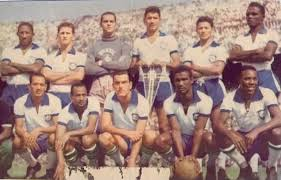Dessa maneira, a ideia foi organizar um campeonato com participação popular para escolher as novas cores da equipe. Após a derrota na Copa de 1950, uma verdadeira tragédia nacional, o concurso da nova camisa veio para buscar uma renovação nos ânimos da nação com o futebol. E teve relativo sucesso, com mais de 300 concorrentes.
O regulamento pedia uniforme completo dos jogadores: camisa, calção e meias. Além disso, o modelo escolhido poderia, a critério da CBD, ser utilizado em outras modalidades esportivas. O símbolo da CBD em alguma parte do conjunto era obrigatório, mas o nome “Brasil” e o símbolo da bandeira nacional não precisaria constar.
O criador da camisa canarinho vivia, à época do concurso em Pelotas, no Rio Grande do Sul, trabalhando como desenhista no jornal local. Quando adolescente, treinava seus desenhos nas arquibancadas dos estádios, fazendo esboços das jogadas por meio de bonecos desenhados, aos moldes das reproduções de gols impressas jornais uruguaios.
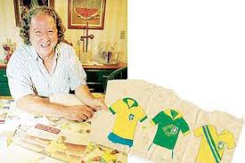“Fiz mais de cem desenhos. Fiz duas faixas com um "x". Fiz um "v" como o do Vélez Sarsfield. Cheguei à conclusão de que a camisa tinha que ser toda amarela.”
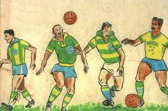Quando estava pintando a versão final do desenho, Schlee usou as cores que tinha à mão: camisa ficou em amarelo-ouro e o shorts tornou-se azul-cobalto. Não eram exatamente as mesmas cores da bandeira nacional, mas as tonalidades foram aceitas, e assim estão no uniforme da seleção até hoje.
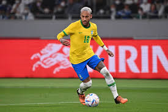O futebol no Brasil é uma paixão nacional e uma parte essencial da identidade cultural do país. A seleção brasileira é conhecida por seu estilo de jogo técnico e criativo, frequentemente associado ao termo "samba futebol". O Brasil é o país mais vitorioso na história da Copa do Mundo da FIFA, com cinco conquistas.
Na Suécia, o Brasil conquistou seu primeiro título mundial. A equipe era liderada por jogadores como Pelé, que fez sua estreia em Copas do Mundo, e Garrincha. O Brasil venceu a final contra a Suécia por 5 a 2.
No Chile, o Brasil conquistou seu segundo título. A equipe, novamente com Pelé e Garrincha, mas com Pelé se machucando durante o torneio, venceu a Tchecoslováquia por 3 a 1 na final.
No México, o Brasil ganhou seu terceiro título com uma equipe considerada uma das melhores de todos os tempos. A seleção, liderada por Pelé, Tostão, Jairzinho e outros, derrotou a Itália por 4 a 1 na final.
Nos Estados Unidos, o Brasil conquistou seu quarto título. A seleção era dirigida por Dunga e contou com jogadores como Romário e Bebeto. O Brasil venceu a Itália nos pênaltis após um empate 0 a 0 na final.
Na Coreia do Sul e Japão, o Brasil conquistou seu quinto título mundial. A equipe, sob o comando de Luiz Felipe Scolari e com uma linha ofensiva de Ronaldo, Rivaldo e Ronaldinho Gaúcho, venceu a Alemanha por 2 a 0 na final.
Essas conquistas consolidaram o Brasil como uma das maiores potências do futebol mundial.
Desde a era de Pelé, o Brasil produziu uma série de jogadores lendários que marcaram época tanto no futebol nacional quanto internacional. Pelé, frequentemente considerado o maior jogador de todos os tempos, revolucionou o esporte com sua habilidade e visão de jogo, conquistando três Copas do Mundo (1958, 1962 e 1970).
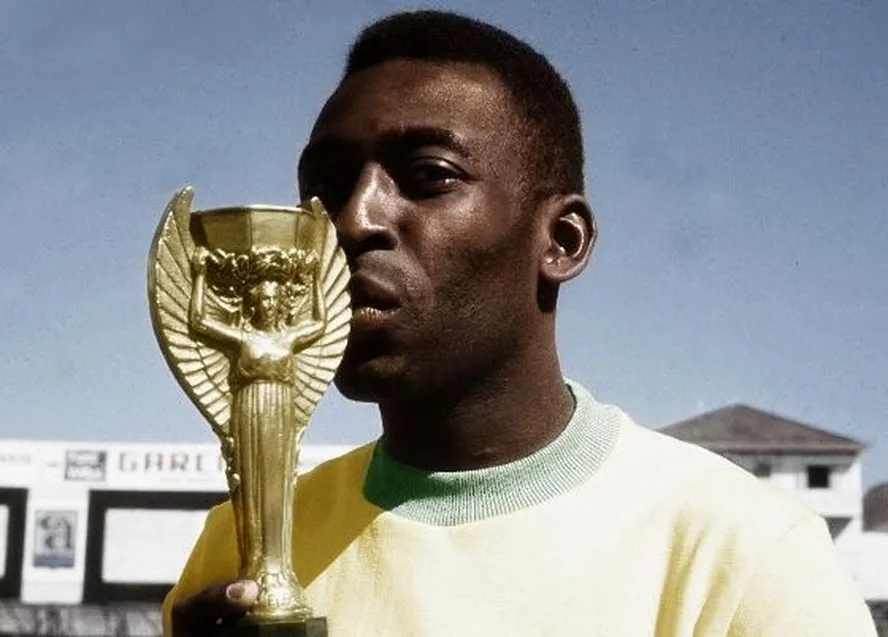Na década de 1970, após a saída de Pelé, a ascensão de jogadores como Zico e Sócrates trouxe um novo estilo criativo ao futebol brasileiro, com Zico sendo conhecido por sua habilidade técnica e Sócrates por sua inteligência em campo e seu papel como líder.
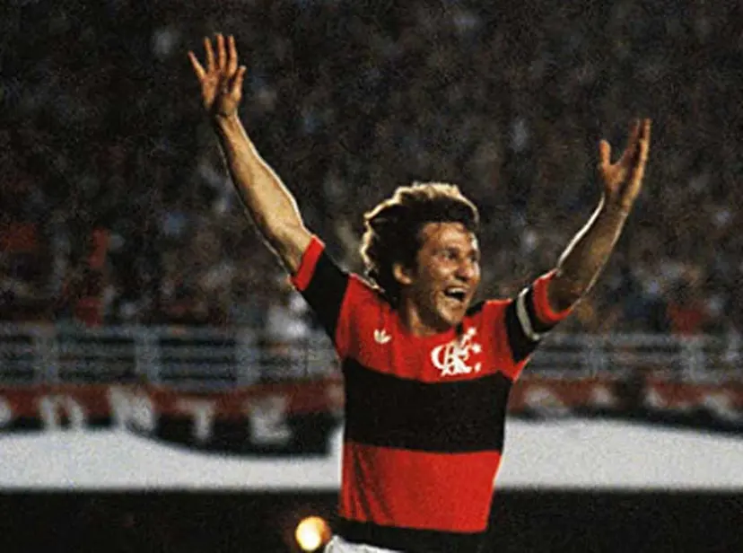 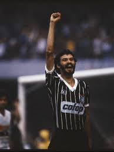Nos anos 1990, Romário e Bebeto brilharam, especialmente durante a conquista da Copa do Mundo de 1994. Romário foi um atacante implacável, enquanto Bebeto era conhecido por suas habilidades de drible e finalização.
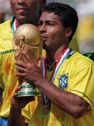 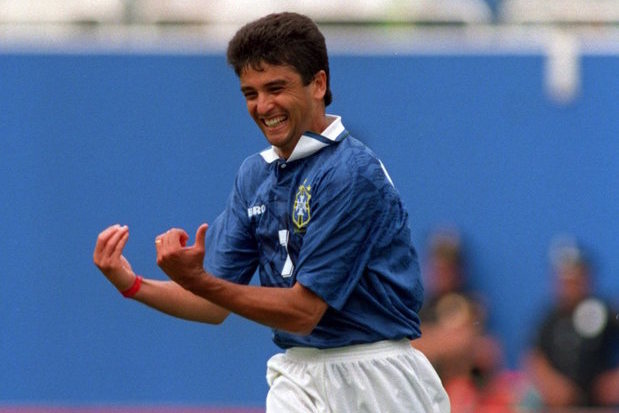 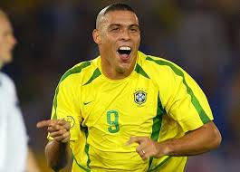 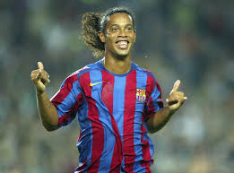A virada do milênio trouxe Ronaldo, conhecido como "Fenômeno", cuja combinação de força, velocidade e técnica foi fundamental para as vitórias do Brasil na Copa do Mundo de 2002. Ronaldo, Rivaldo e Ronaldinho Gaúcho formaram um trio ofensivo letal.
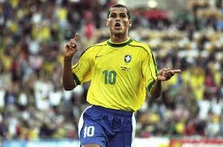Nos últimos anos, Neymar emergiu como o novo rosto do futebol brasileiro, com sua habilidade de drible e criatividade levando o Brasil em competições internacionais e mantendo a tradição de talento ofensivo que caracteriza o futebol brasileiro. Cada uma dessas estrelas contribuiu para a rica herança do futebol no Brasil, mantendo o país no topo do cenário global.
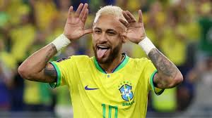